プロット帖 使いかた
漫画のプロットを、セリフやモノローグのカードで組み立てるアプリです。 カードを並べ替えながら話の流れを考え、できたセリフはCLIP STUDIO PAINTのストーリーエディターにそのまま流し込めます。
スマホ・タブレット・PCのどれでも使えます。
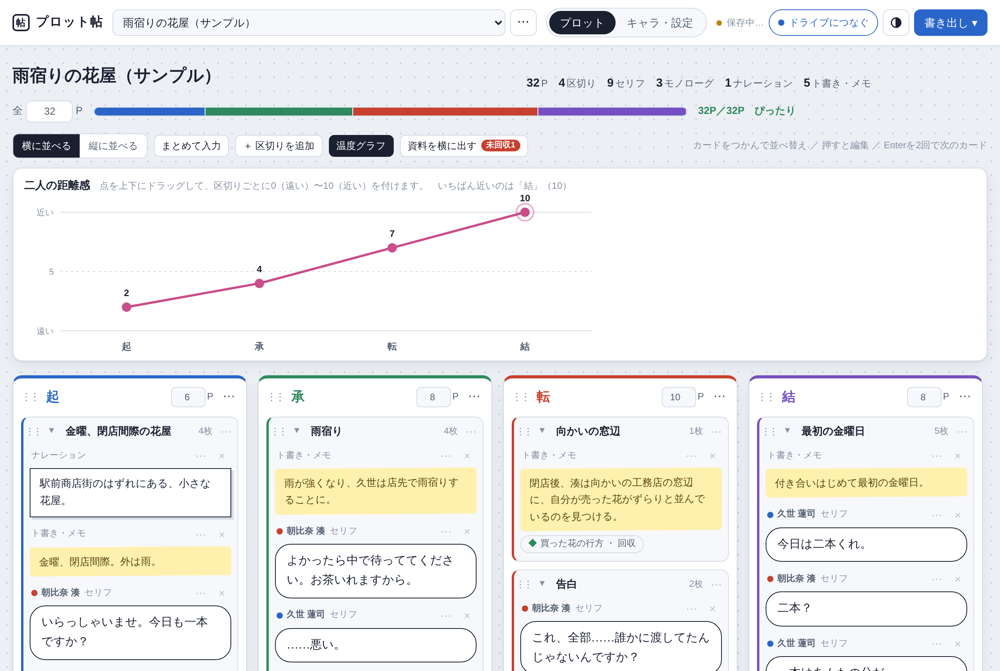
はじめかた
アプリのページを開くと、すぐに使えます。最初は「雨宿りの花屋(サンプル)」という作品が入っています。そのまま触って試すか、上の帯の「空のプロットを作る」で新しく始めてください。
ホーム画面・アプリ一覧に追加する
追加しておくと、アプリのように直接起動できます。一度開いたあとは、ネットにつながっていなくても起動して書けます。
| 端末 | 追加のしかた |
|---|---|
| iPhone・iPad(Safari) | 共有ボタン →「ホーム画面に追加」 |
| Android(Chrome) | 右上の「︙」→「ホーム画面に追加」または「アプリをインストール」 |
| PC(Chrome・Edge) | アドレスバーの右にあるインストールのボタン |
PC版(インストールするタイプ)を使っている場合は、デスクトップやスタートメニューの「プロット帖」から起動します。
カードを書く
セリフ・モノローグ・ナレーション・ト書きを、1枚ずつカードに書きます。カードは、仕上がりのフキダシに近い形で表示されます。
| 種類 | 見た目 | ストーリーエディターへの書き出し |
|---|---|---|
| セリフ | 丸いフキダシ | 入る |
| モノローグ | 点線の枠 | 入る |
| ナレーション | 四角い枠 | 入る |
| ト書き・メモ | 黄色い付箋 | 入らない(演出のメモ用) |
書く・直す
カードを押すと、青い枠が付いて書けるようになります。ほかの場所を押すと終わります。
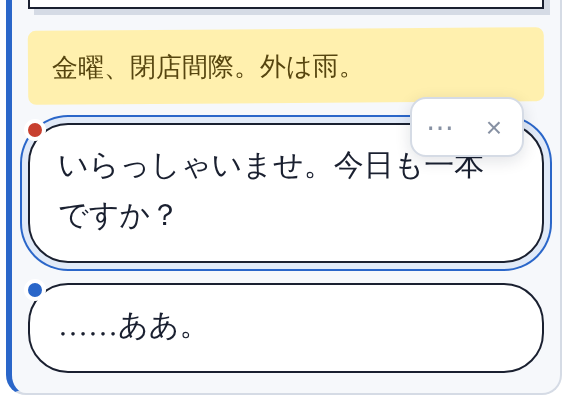
- Enterを1回押すと、同じカードの中で改行します(2行のセリフなど)。
- Enterを2回押すと、すぐ下に次のカードができて、そのまま続けて書けます。セリフの話者は、2人のあいだで交互に切り替わります。
- 文章の途中でEnterを2回押すと、そこから後ろが次のカードに分かれます。
- 区切りのいちばん下にある「＋ セリフ」「＋ モノローグ」などのボタンでも追加できます。
種類と話者を変える
カードの上の「朝比奈 湊 ・ セリフ」のような表示を押すと、種類と話者を選べます。話者はキャラの色で表示されます。
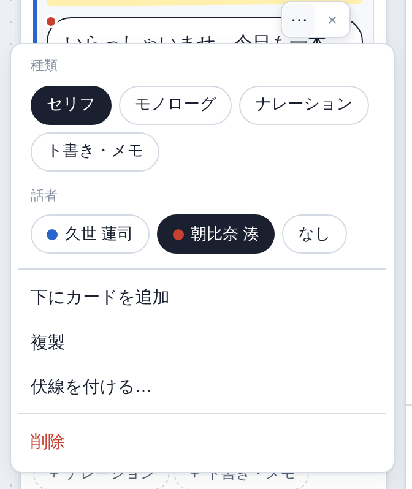
複製・伏線・削除
カードの右上の「⋯」から選びます。PCでは、カードにマウスをのせると出る「×」でも削除できます。削除したあと、画面の下に出る「元に戻す」を押すと戻せます。
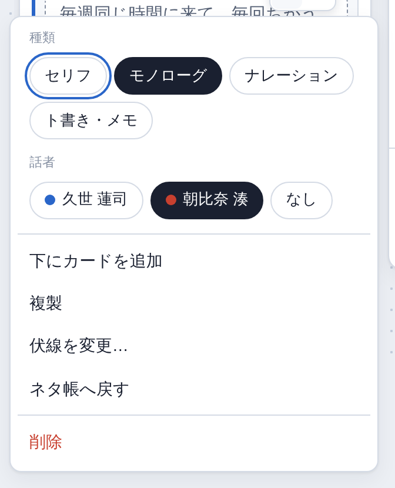
カードを並べ替える
カードそのものをつかんで、好きな場所に動かします。別の区切りへも移せます。
- PC: カードをつかんで(マウスのボタンを押したまま)動かします。
- スマホ・タブレット: カードを少し長めに押すと持ち上がります。そのまま指を動かして、置きたい場所で離します。長押しせずに指を動かすと、普通のスクロールになります。
区切り(起承転結)
起・承・転・結のように、カードをまとめる枠です。
- 名前は、見出しの文字を押して自由に変えられます。
- 「＋ 区切りを追加」で、いくつでも増やせます。
- 見出しの「◯P」に、その区切りの予定ページ数を入れます。
- 見出しの空いているところをつかむと、区切りごと並べ替えられます。見出しの「⋯」の「ひとつ前へ移動」「ひとつ後ろへ移動」でも動かせます。
- 見出しの「⋯」から、色の変更・前後への区切りの追加・削除ができます。
- 上の「横に並べる」「縦に並べる」で、区切りの並べ方を切り替えられます。
まとめて入力
先に文章で書いておいたセリフを、まとめてカードにできます。上の「まとめて入力」を押します。
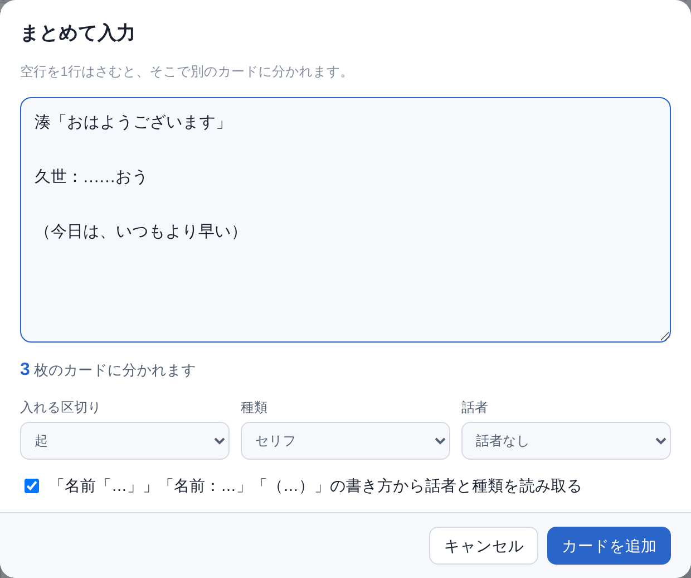
- 空行を1行はさむと、そこで別のカードに分かれます。何枚に分かれるかが下に表示されます。
- 次の書き方をすると、話者と種類を自動で振り分けます。
| 書き方 | なるカード |
|---|---|
湊「おはようございます」 |
湊のセリフ |
久世：……おう |
久世のセリフ |
(今日は、いつもより早い) |
モノローグ |
- 話者に「交互」を選ぶと、1人目と2人目のセリフが交互になります。
ページ数を確かめる
タイトルの下の「全◯P」に、作品全体の予定ページ数を入れます。区切りごとの予定ページ数が、色分けのバーで表示されます。
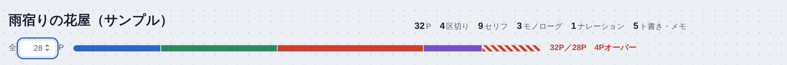
- 合計が予定を超えると、超えた分が赤い斜線になり、「◯Pオーバー」と表示されます。はみ出した区切りのページ数の欄も赤くなります。
- 足りないときは「残り◯P」、ちょうどのときは「ぴったり」と表示されます。
温度グラフ(二人の距離感)
区切りごとに、二人の距離感を0(遠い)〜10(近い)で付けて、折れ線で表示します。告白や関係の成立をどこに置くか、いちゃいちゃの見せ場がどこにあるかを、グラフの形で確かめられます。
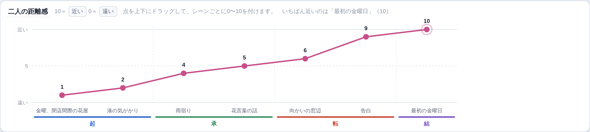
- 点を上下にドラッグして付けます。まだ付けていない区切りは、下に点線の丸が出ています。
- いちばん近い区切りには丸い印が付き、上に「いちばん近いのは『結』(10)」のように表示されます。
- 上の「温度グラフ」ボタンで、表示・非表示を切り替えます(スマホでは、最初は閉じています)。
- 付けた距離感を消すときは、区切りの「⋯」→「距離感を消す」を選びます。
伏線チェック
伏線を「張る」カードと「回収」するカードを指定しておくと、回収し忘れを見つけられます。
- カードの「⋯」→「伏線を付ける…」を選びます。
- 新しい伏線の名前を入れて「張る」を押すか、すでにある伏線の「張る」「回収」を押します。
- カードの下に、どの伏線かが表示されます。◇は張る、◆は回収です。
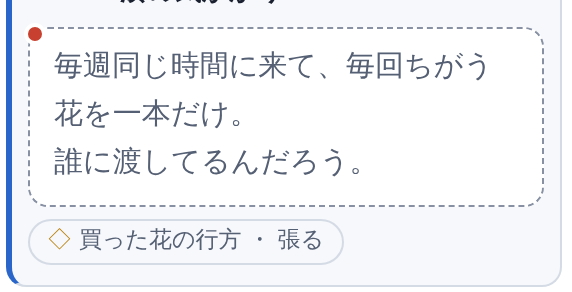
伏線の一覧は「資料を横に出す」→「伏線」タブで見られます。
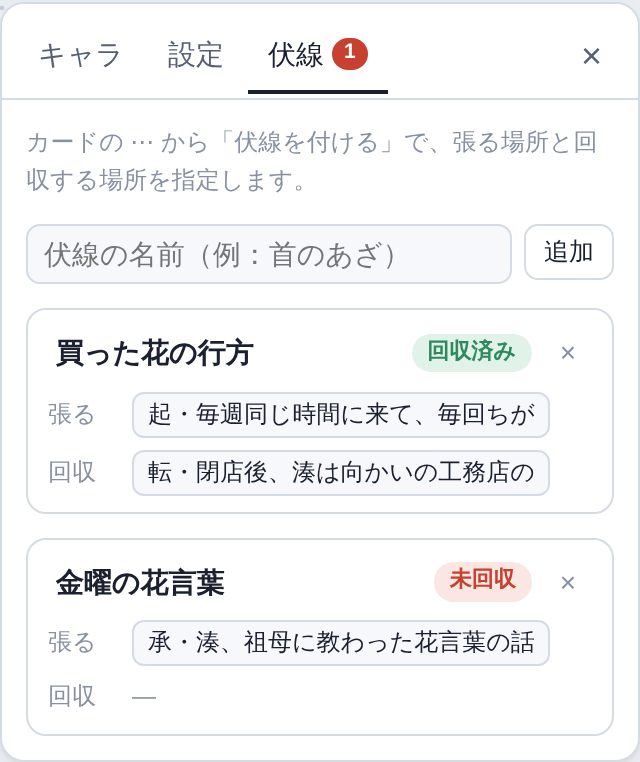
| 表示 | 意味 |
|---|---|
| 回収済み | 張って、そのあとで回収している |
| 未回収 | 張ったまま回収していない |
| 張っていない | 回収だけあって、張る場所がない |
| 回収が先 | 張るより前の場所で回収している |
| 未使用 | どのカードにも付いていない |
- 「張る」「回収」の横の場所を押すと、そのカードへ移動します。
- 未回収の数は、「資料を横に出す」ボタンにも赤く表示されます。
キャラと作品の設定
上の「キャラ・設定」タブで書きます。
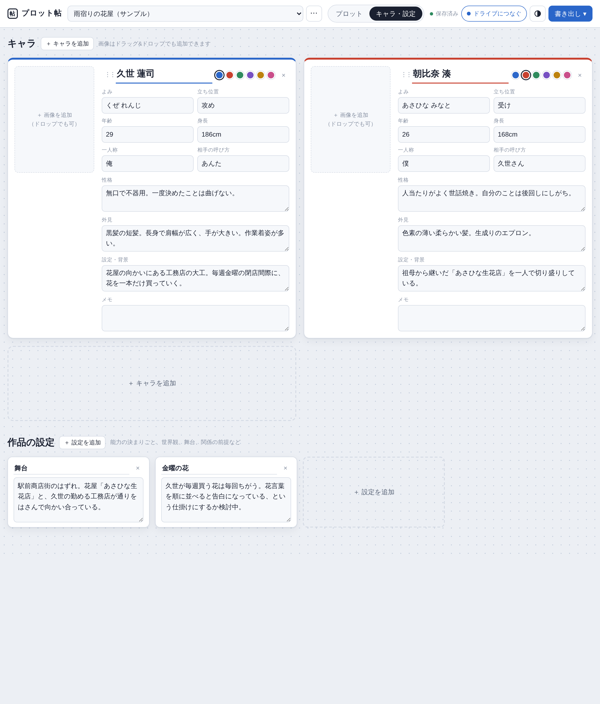
キャラ
- 名前・よみ・立ち位置・年齢・身長・一人称・相手の呼び方・性格・外見・設定・メモを書けます。
- 画像は何枚でも入れられます。左の枠を押すか、画像をドラッグ&ドロップします。小さい画像を押すと大きく表示され、「メイン画像にする」「削除」ができます。
- 名前の横の色は、プロットの話者の色にも使われます。
- 「⋮⋮」をつかむと、キャラの順番を並べ替えられます。
作品の設定
能力の決まりごと、世界観、舞台、関係の前提など、作品ごとの設定を書いておく場所です。
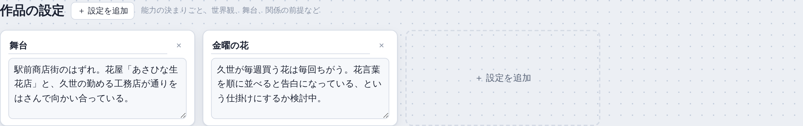
資料を横に出す
プロットを書きながらキャラや設定を確かめたいときは、「資料を横に出す」を押します。キャラ・設定・伏線の3つのタブで横に表示されます(スマホでは下から出ます)。
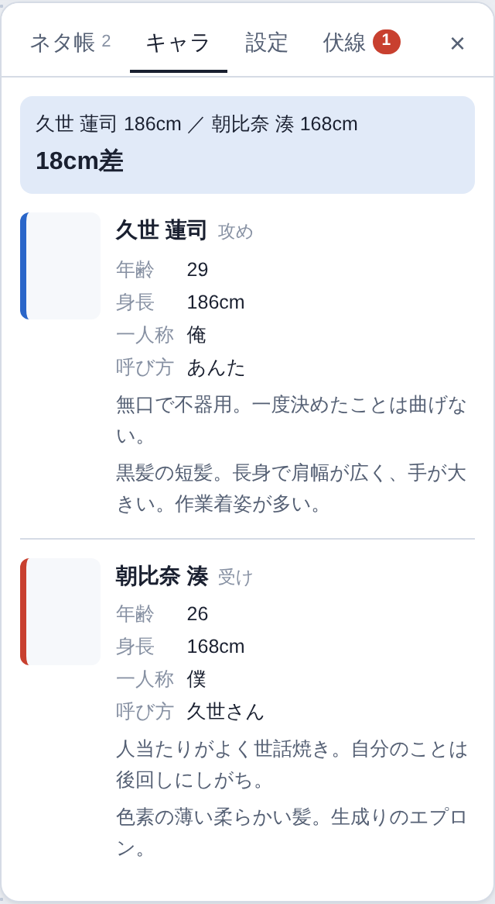
キャラのタブでは、身長が入っていれば身長差も表示されます。
書き出し
右上の「書き出し」(スマホでは ⇩)から選びます。
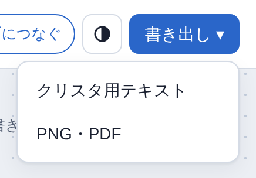
クリスタ用テキスト
カードの順にテキストを並べて、カードごとに空行を1行はさみます。
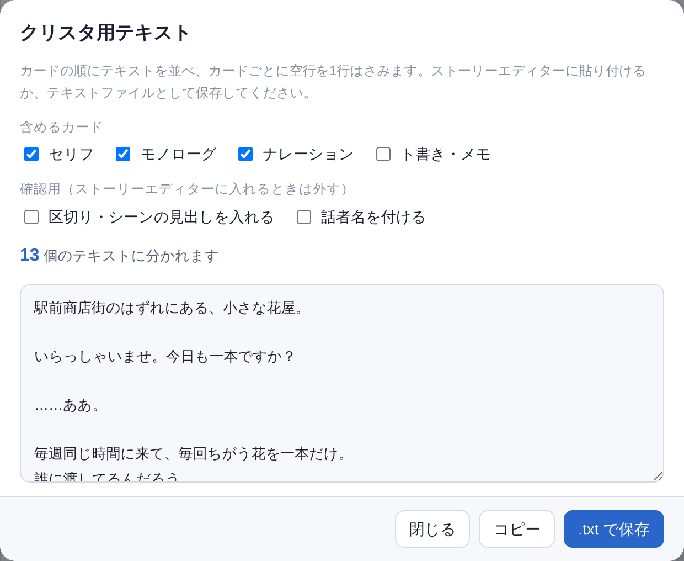
- 「コピー」してストーリーエディターに貼るか、「.txt で保存」してストーリーエディターで読み込みます。
- 「含めるカード」で、書き出す種類を選べます(ト書き・メモは最初から外してあります)。
- 「区切りの見出しを入れる」「話者名を付ける」は確認用です。ストーリーエディターに入れるときは外してください。
PNG・PDF
編集さんに見せるときや、印刷して見直すときに使います。
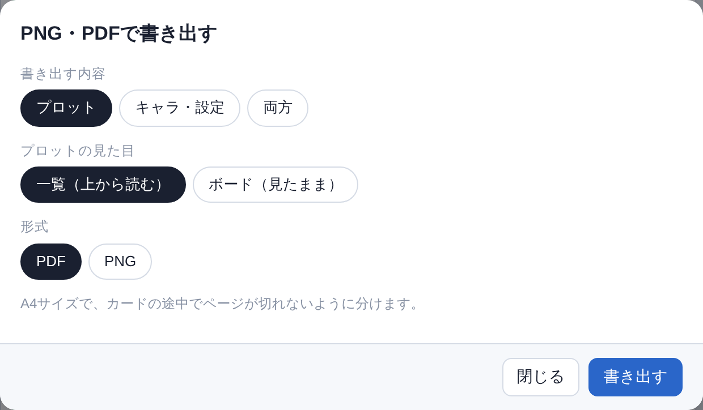
- 「プロット」「キャラ・設定」「両方」から選べます。
- プロットは「一覧(上から読む)」と「ボード(見たまま)」の2つの見た目から選べます。
- 温度グラフや伏線の一覧も入ります。
- PDFはA4サイズで、カードの途中でページが切れないように分けます。
作品の管理とバックアップ
作品名の横の「⋯」から行います。作品の切り替えは、作品名の欄で選びます。
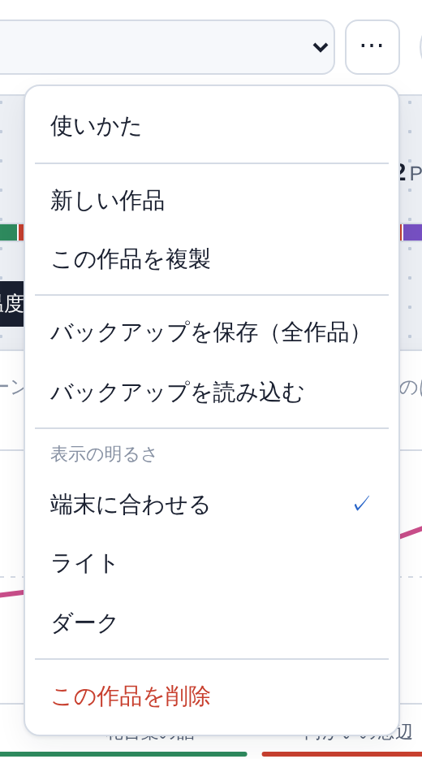
- 新しい作品 / この作品を複製 / この作品を削除(削除は元に戻せません)
- バックアップを保存(全作品): すべての作品を1つのファイルに保存します。キャラの画像も入ります。
- バックアップを読み込む: 保存したファイルから作品を取り込みます。今ある作品は消えずに、追加されます。
書いたものは、自動でその端末の中に保存されます。右上の「保存済み」がその合図です。
ダークモード
PCでは右上の ◐ のボタン、スマホでは作品名の横の「⋯」の中から選びます。
- 端末に合わせる: 端末の設定(ライト/ダーク)と同じにします
- ライト / ダーク: いつもその表示にします
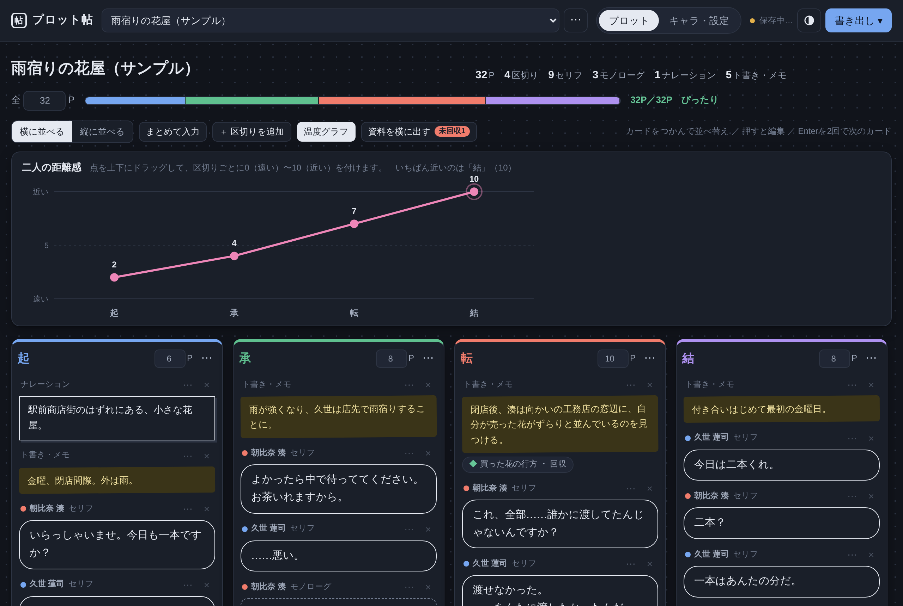
スマホで使う
スマホでは、画面に合わせて表示がすっきりします。
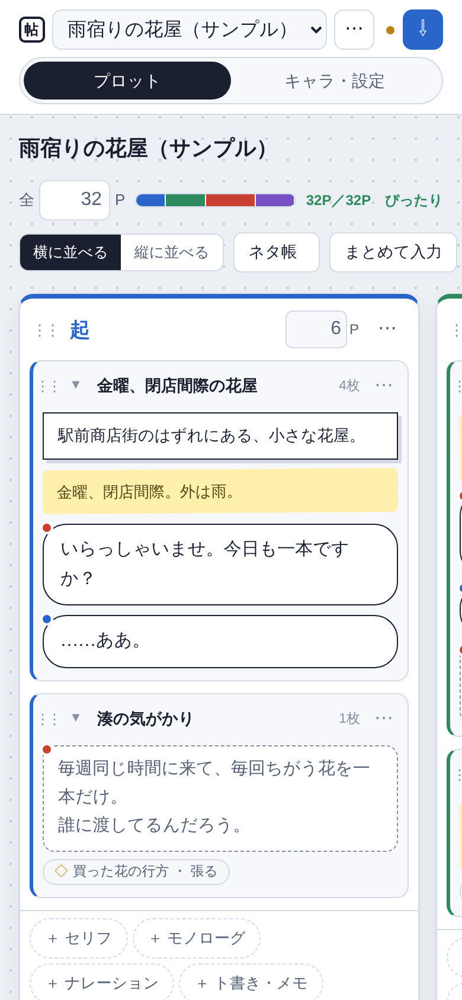
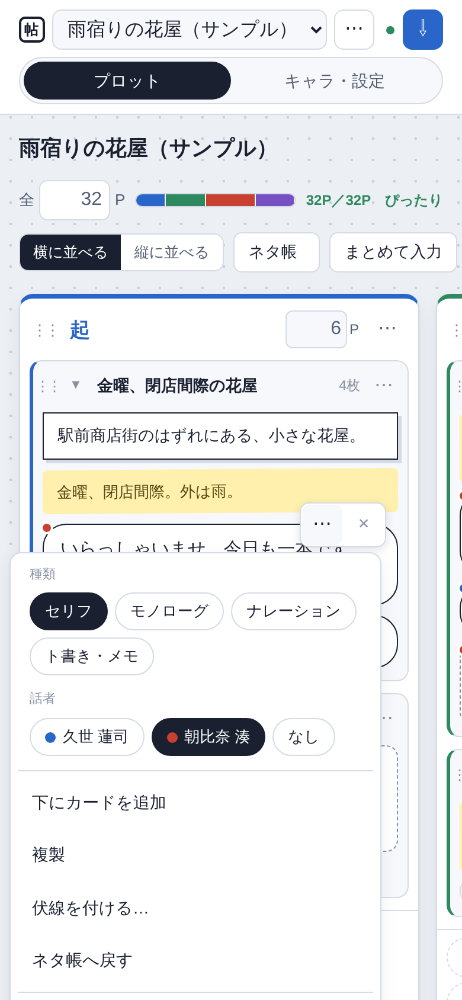
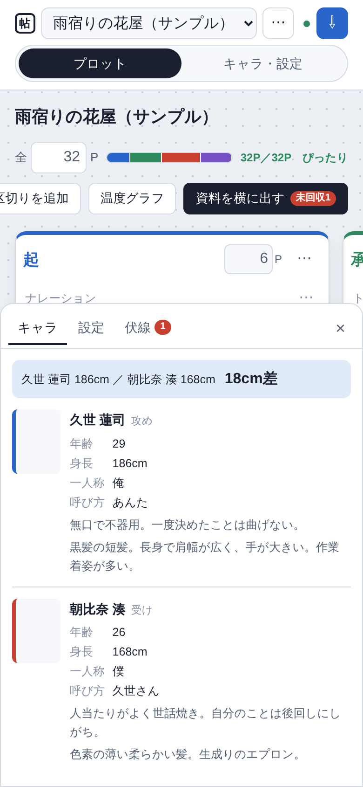
- 区切りは1画面に1つずつ表示されます。横にスワイプすると、次の区切りに止まります。
- 上のボタン類は、横にスクロールして選びます。
- カードを押すと書けます。カードを長押しすると、持ち上げて並べ替えられます。
- 保存と同期の状態は、右上の点の色で表示されます(緑=保存済み・同期済み)。
端末どうしの同期(Googleドライブ)
右上の「ドライブにつなぐ」を押してGoogleアカウントでログインすると、ほかの端末と同じ作品を編集できます。
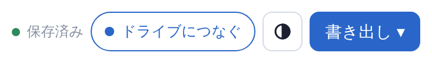
- 一度つなぐと、編集するたびに自動で同期します。アプリを開いたときや、ほかのアプリから戻ってきたときにも同期します。ボタンには「同期済み 1:05」のように最後に同期した時刻が出ます。
- ブラウザ・ホーム画面版では、ログインが1時間ほどで切れます。「再接続」になったら押してください。それまでに書いた分は、端末の中に保存されています。PC版は、一度ログインすれば続けて使えます。
- データはGoogleドライブの「アプリ専用の場所」に入ります。ドライブの画面には表示されません。
- 同じ作品を2台で同時に書き換えた場合は、あとから保存したほうが残ります。
- ログインできるのは、アプリを置いた人がテスト用に登録したGoogleアカウントだけです。
- 「ドライブにつなぐ」が出ていない場合や、つながなくても、その端末の中に保存して使えます。
困ったとき
書いたものが見当たらない 別の端末で書いた場合は、ドライブにつないで同期すると表示されます。ブラウザの閲覧データを消すと、その端末の中のデータも消えます。こまめに「バックアップを保存」しておくと安心です。
スマホでカードが動かない 指を動かす前に、少し長めに押してください。すぐに動かすとスクロールになります。
Enterを押すと文字の変換が確定するだけで、次のカードにならない 日本語の変換中のEnterは、確定にだけ使われます。確定したあとに、Enterを2回押してください。
「新しい版があります」と出た 「切り替える」を押すと、最新の版になります。書いている内容はそのまま残ります。
PC版のインストーラーを開くと「WindowsによってPCが保護されました」と出る 個人で作ったアプリなので、毎回この確認が出ます。「詳細情報」を押してから「実行」を押してください。